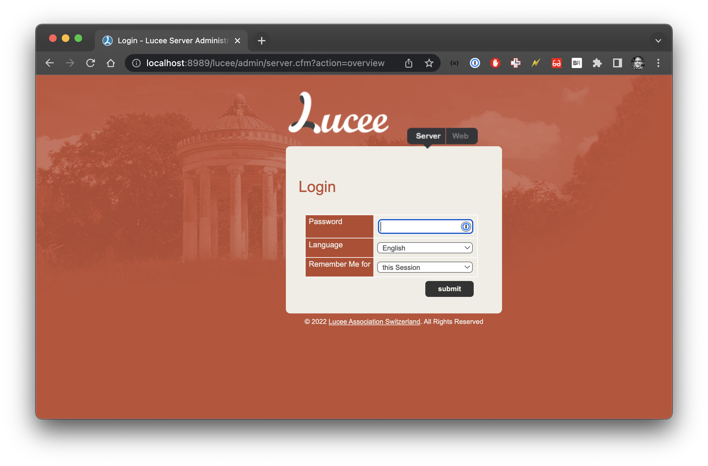

In the previous post I created a super slim image for Lucee in Docker. This image has a “lucee light” version which doesn’t have the admin. Let’s say we need the admin, so we are going to go back and build a “tubby” version of lucee.
So let’s do that!
Let’s suppose we have the following docker file (I go over all the steps in my previous post):
FROM alpine as base
ARG LUCEE_VERSION="5.3.10.28-SNAPSHOT"
ADD https://cdn.lucee.org/lucee-express-${LUCEE_VERSION}.zip lucee.zip
RUN mkdir /lucee && \
unzip lucee.zip -d /lucee && \
chmod +x /lucee/*.sh && \
chmod +x /lucee/bin/*.sh && \
rm -f lucee.zip && \
rm -rf /lucee/__MACOSX &&
COPY webroot /lucee/webapps/ROOT
FROM alpine
RUN apk add openjdk11-jre
COPY --from=base /lucee /lucee
RUN LUCEE_ENABLE_WARMUP=true /lucee/startup.sh
ENTRYPOINT [ "/lucee/startup.sh" ]
The code above is enough to get our image running, so let’s build and start the image:
To build it: docker build -t markdrew/lucee-light .
To run it: docker run --rm --name lucee-light -p 8989:8888 markdrew/lucee-light
Now when we head to http://localhost:8989/lucee/admin/server.cfm?action=overview to view our admin we get:

Right, so we need to add a file called password.txt somewhere in our image, which looks like: /lucee-server/context/password.txt
This is easy enough and we can get some nice build time features. The updated Dockerfile now looks like this:
FROM alpine as base
ARG LUCEE_VERSION="5.3.10.28-SNAPSHOT"
ARG LUCEE_PASSWORD="password"
ADD https://cdn.lucee.org/lucee-express-${LUCEE_VERSION}.zip lucee.zip
RUN mkdir /lucee && \
unzip lucee.zip -d /lucee && \
chmod +x /lucee/*.sh && \
chmod +x /lucee/bin/*.sh && \
rm -f lucee.zip && \
rm -rf /lucee/__MACOSX && \
mkdir -p /lucee/lucee-server/context/
RUN echo ${LUCEE_PASSWORD} > /lucee/lucee-server/context/password.txt
COPY webroot /lucee/webapps/ROOT
FROM alpine
RUN apk add openjdk11-jre
COPY --from=base /lucee /lucee
RUN LUCEE_ENABLE_WARMUP=true /lucee/startup.sh
ENTRYPOINT [ "/lucee/startup.sh" ]
The line with ARG LUCEE_PASSWORD="password" is our default password, we can , and should, override this. This can be done at build time by doing:
docker build ... --build-arg LUCEE_PASSWORD=mysecretpassword ...
The next part is in the RUN command, where we add mkdir -p /lucee/lucee-server/context/. Since at this point we dont have the lucee-server/context folder we wont be able to create it. The -p argument to mkdir allows to create the intermediate directories if they dont exist.
Finally we add the actual password! RUN echo ${LUCEE_PASSWORD} > /lucee/lucee-server/context/password.txt this writes out our supersecretpassword to the password.txt folder.
When we warm up lucee in the next step it will read the password.txt file, set the password and delete the file.
If we now go to http://localhost:8989/lucee/admin/server.cfm?action=overview we see our password is set:

And that is it! (or is it)
This should get you most of the way but what we have done here is actually put a clear text password in our docker image. I don’t like this personally. Lucee encrypts the password into the lucee-server.xml file which is much better.
A possible solution (whilst keeping our system clean is to do a bit of a double install:
FROM alpine as base
ARG LUCEE_VERSION="5.3.10.28-SNAPSHOT"
ARG LUCEE_PASSWORD="password"
RUN apk add openjdk11-jre
ADD https://cdn.lucee.org/lucee-express-${LUCEE_VERSION}.zip lucee.zip
RUN mkdir /lucee && \
unzip lucee.zip -d /lucee && \
chmod +x /lucee/*.sh && \
chmod +x /lucee/bin/*.sh && \
rm -f lucee.zip && \
rm -rf /lucee/__MACOSX && \
mkdir -p /lucee/lucee-server/context/
RUN echo ${LUCEE_PASSWORD} > /lucee/lucee-server/context/password.txt
COPY webroot /lucee/webapps/ROOT
RUN LUCEE_ENABLE_WARMUP=true /lucee/startup.sh
FROM alpine
RUN apk add openjdk11-jre
COPY --from=base /lucee /lucee
ENTRYPOINT [ "/lucee/startup.sh" ]
In the above code in line 4 we have: RUN apk add openjdk11-jre , this installs the JRE right at the start so in the base image we can create our password, and then warmup lucee, thus reading and removing the password.txt file (see RUN LUCEE_ENABLE_WARMUP=true /lucee/startup.sh ) we then start a new build , install the JRE and copy our expanded folder into our finalised build.
There, no more clear text passwords. Begone you pesky haxx0rs!
Tweet
comments powered by Disqus